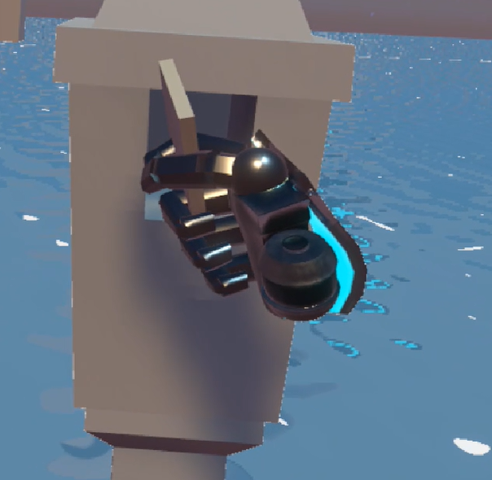
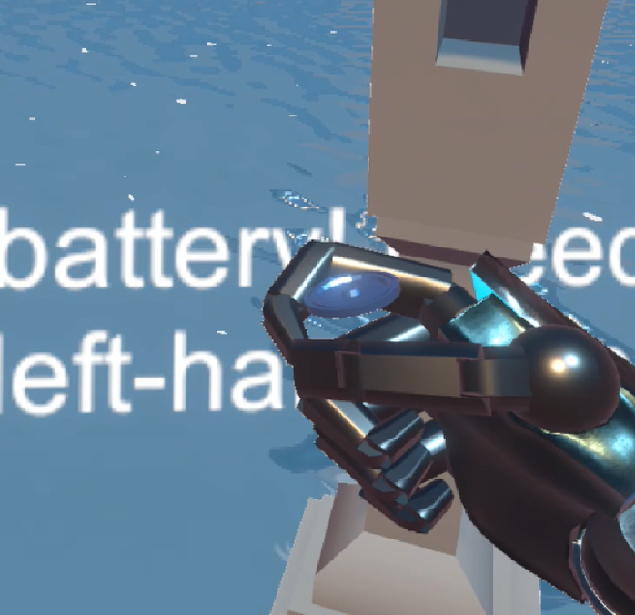
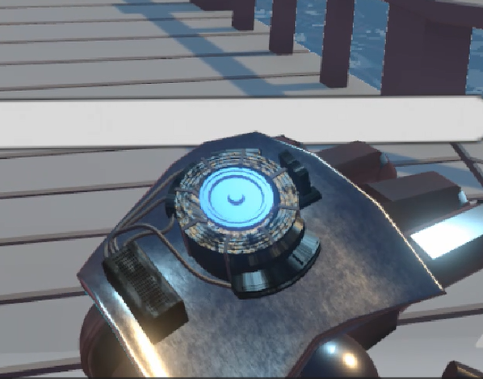
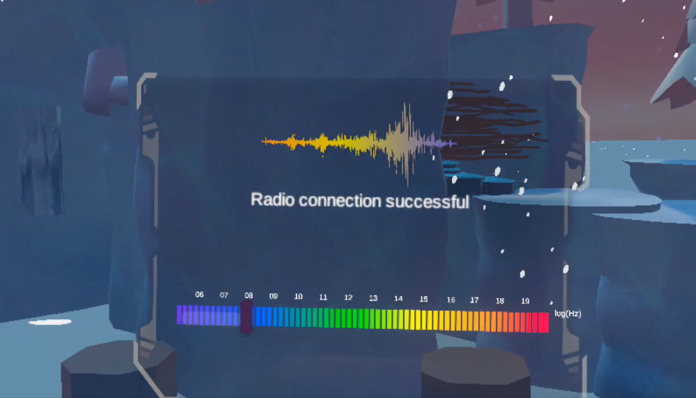
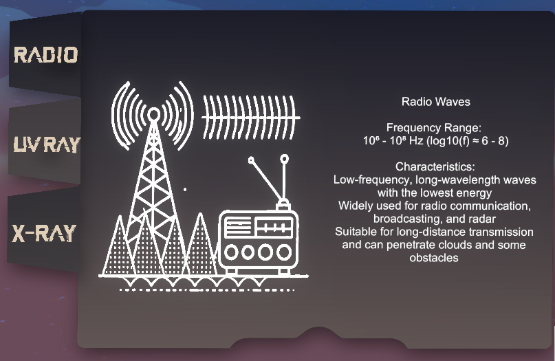

Radiant Adventure
Radiant Adventure
In a post-apocalyptic world where signal towers have shut down,
the player takes on the role of a lone survivor trying to restore global communication.
By collecting batteries and unlocking Radio, UV, and X-Ray modes,
he tunes frequencies to reveal hidden clues and solve puzzles across three immersive scenes.
This serious game is designed to help young players understand electromagnetic waves
and frequencies through interactive gameplay.
About Me & Project Contribution
Name: Ziyi Wang
Role: Technical Designer / Unity Developer
I am a passionate VR developer with a strong background in interactive systems, immersive design, and game logic implementation. In this project, I was responsible for implementing all core gameplay systems and UI interactions using Unity and C#.
My main contributions included:
- Electromagnetic frequency mode switching (Radio, UV, X-Ray)
- Battery pickup and activation logic
- Slider UI controlled by joystick for frequency tuning
- Electromagnetic wave detection system
- Air wall unlocking & player progression logic
- All in-game UI panels and interaction scripts
- Shader trigger controls and visual feedback integration
You can view the full project source code and development logs at the GitHub repository:
🔗 GitHub: Microwave-Adventure
Radio Mode & UV Mode & X-Ray Mode
Radio Mode:
Used for navigation, players rely on the radio frequency band to receive guidance toward mission objectives, helping locate targets in the virtual environment.
UV Mode:
Players can see content normally invisible to the naked eye, such as hidden symbols, path hints, or special markings for puzzle-solving, achieved through shader-based UV scanning effects.
X-Ray Mode:
Allows players to see through objects to reveal internal structures or hidden items using shader effects, with a time limit to enhance gameplay challenge.
Battery Activation & Electromagnetic Unlocking
Players must search for electromagnetic batteries hidden in the scene. Once found, they can pick them up and insert them into their gauntlet (left hand). This action activates a specific electromagnetic mode.
After insertion, the battery glows once the player tunes the correct frequency using the joystick. This unlocks powerful vision modes such as Radio, UV, or X-Ray, allowing the player to proceed with puzzle-solving.

Searching for a battery

Picking up the battery

Battery inserted & activated
Electromagnetic Frequency System

After collecting a battery, the player can open the frequency tuner interface.
By rotating the joystick, he aligns the slider with the correct band range—Radio, UV, or X-Ray.
Once tuned successfully, the battery emits a glow and the corresponding mode becomes active,
unlocking new visual abilities for puzzle-solving.
Each mode changes the player's view, revealing hidden paths, symbols, or internal structures
depending on the selected wave type.
This panel presents an in-game electromagnetic wave index designed to educate and assist the player.
Each entry explains the properties and frequency range of a specific wave type—Radio, UV, or X-Ray—using simple visual diagrams.
Once the player collects a corresponding battery, the related index entry becomes unlocked.
Players can open the index to review scientific information or confirm the required frequency for activation.
This UI serves both as an educational feature and a functional reminder for gameplay.

Project Overview & Player Journey
This VR experience is centered around electromagnetic wave interaction, where gameplay is driven by tuning, unlocking, and decoding through frequency-based mechanics.
Instead of providing direct instructions, the environment encourages players to observe, experiment, and learn by engaging with responsive systems.
As the player progresses, he explores three distinct scenes with increasing complexity. In each scene, he must locate and insert batteries to unlock specialized vision modes,
then use joystick-controlled sliders to match frequencies and activate hidden paths, visual effects, or audio cues.
The journey is nonlinear and immersive—players receive feedback through visual glow, UI panels, and environmental changes, allowing them to solve challenges with logic and attention to electromagnetic behavior.
Development Journey
This project was developed over several weeks through iterations and testing. Here's how the journey unfolded:
- Week 1: Brainstorming concept + choosing electromagnetic wave theme
- Week 2: Built basic locomotion, interaction & XR input
- Week 3: UI system and slider tuning prototype
- Week 4: Connected frequency logic with battery system
- Week 5: Shader integration: UV/X-ray effects, audio feedback
- Week 6: Polish & playtest, created UI panel for guidance
Additional Features
In addition to the core gameplay systems, I implemented several extended features to enrich immersion and interactivity:
-
Halo Sequence Guidance: When players enter specific areas, a glowing halo appears to indicate the next interaction point, enhancing spatial awareness and task flow.
-
Electromagnetic Shader Feedback: Upon successful frequency tuning, shader effects visually reveal hidden clues or objects (e.g., UV paths, X-ray internals), providing real-time feedback and encouraging exploration.
-
Interactive Storytelling: Certain objects in the environment trigger voice lines or story fragments, guiding players through the narrative without breaking immersion.
-
Battery Index UI Unlocking: Once a battery is collected, the corresponding frequency entry is unlocked in the index UI, serving both as an educational guide and in-game reference.
-
Joystick-Based Slider Control: Frequency tuning is mapped to joystick motion instead of direct button input, simulating analog radio behavior and enhancing VR realism.
-
3D Positional Audio for Navigation (Unused): I implemented a spatial sound system to help guide players toward objectives through audio cues. However, during VR testing, it proved too difficult to accurately identify direction in a fully 3D environment, so it was ultimately not used in the final build.
-
Climbing Mechanic (Unused): A basic climbing interaction was implemented and tested successfully. Due to time constraints and level design limitations, this mechanic was not included in the final scenes.
These features reflect both applied and exploratory work toward improving immersion, feedback clarity, and scientific relevance in a VR learning environment.
Reflection
I believe I successfully achieved — and even exceeded — the original goals of this project by creating a fully immersive system that blends logic, environmental feedback, and intuitive VR interaction. What I’m most proud of is that all major vision-based mechanics, battery systems, and frequency-based puzzle flows are working cohesively.
The most challenging part of development was designing and maintaining the long logic chains required to connect each interactive component. Since many puzzles and triggers are interdependent, writing scripts that properly tracked unlock states became increasingly complex. Early in the project, I didn’t account for every mechanic during the design phase, which later forced me to go back and add multiple `bool` flags across various scripts. As the gameplay structure expanded, these dependencies grew more fragile — changing one trigger often meant updating a dozen others to keep the logic consistent.
Although I always knew how to fix issues, the effort required to safely modify interconnected systems taught me a valuable lesson: careful system planning during the design phase is essential. Retrofitting logic into a complex system mid-development makes scaling and debugging significantly harder.
Despite these obstacles, I’m satisfied with the final outcome. All major features function as intended, and in some cases, the implementation even surpassed my original expectations — especially in terms of user feedback and educational clarity.